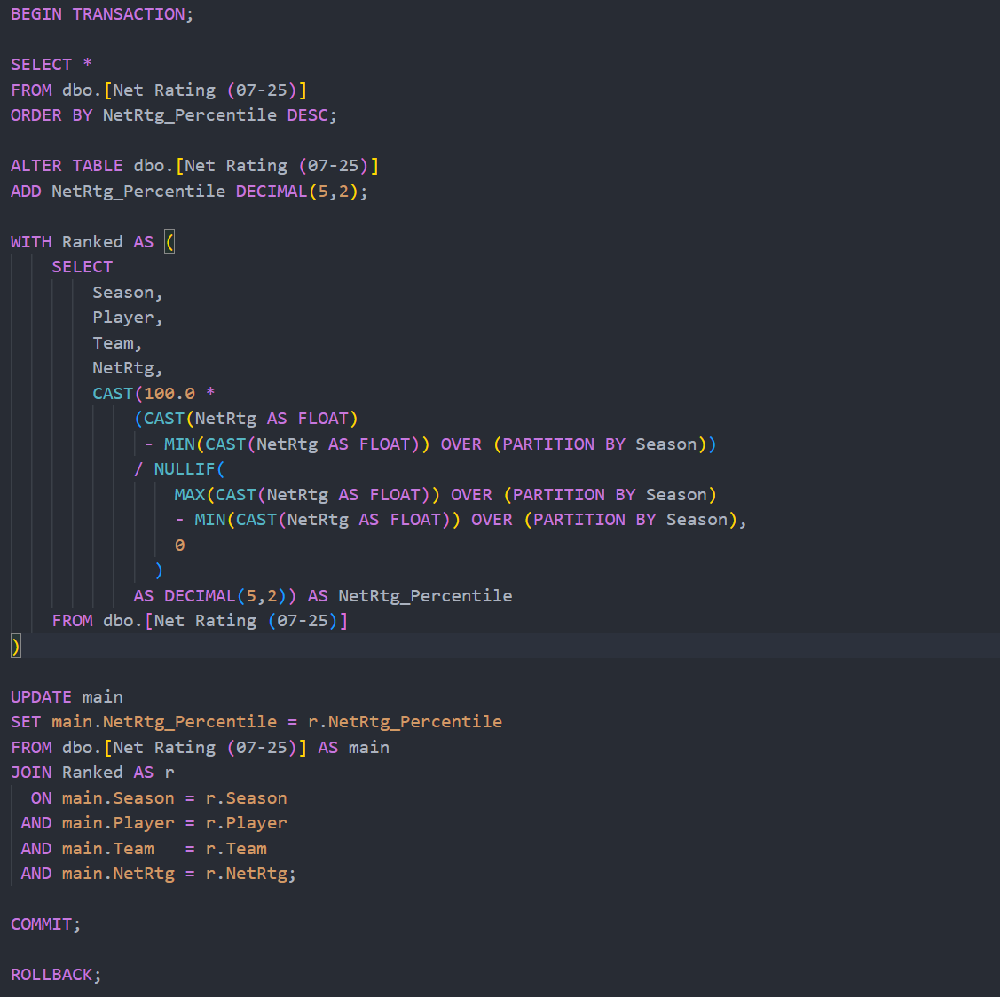

Diving deep into NHL Analytics. A Visual Analysis of Player Performance
Introduction
In modern hockey analysis, comparing players across different seasons, positions, and eras is a complex challenge. Is a 30-goal scorer from 2010 more valuable than a 25-goal scorer today? How do we measure the decline of a star player or the rise of a defensive specialist beyond simple points and plus-minus? The answers often lie hidden in deeper, more advanced metrics.
This forms the basis of why I decided to create the player analysis dashboard detailed in this article. I wanted to build a dynamic, interactive tool that empowers users to explore the careers of any NHL player from 2007-08 to 2024-25. By visualizing advanced statistics, this dashboard moves beyond the box score to reveal the underlying components of a player's performance.
This project set out to answer three key questions that users can explore for any player:
- How has a player's overall value to their team, measured by Wins Above Replacement (WAR), trended throughout their career?
- Which specific skills—like Finishing, Playmaking, or Defence have defined their peak years versus their later seasons?
- How does one player's statistical profile in a given year compare to another's, providing a data-driven basis for evaluation?
By breaking down player performance into these granular components, we can gain a much deeper appreciation for their unique career arcs and true impact on the ice.
Background
To create a fair and insightful comparison between players, this dashboard uses percentile-based stats. These metrics compare a player's performance against the entire league for a given season. A 90th percentile ranking means the player performed better than 90% of his peers in that specific area, providing crucial context.
The key metrics used are:
- Projected Wins Above Replacement (Proj. WAR %): This is an all-in-one metric that estimates a player's total contribution to his team in terms of wins compared to a readily available "replacement-level" player. It is the primary indicator of a player's overall value. 
- Offence & Defence: These categories are broken down further into Even-Strength (EV), Power Play (PP), and Shorthanded (SH) situations to isolate a player's contributions in different game states.
- Production: This evaluates a player's point production per 60 minutes of game time to see how he is impacting the scoresheet.
- Finishing: This measures a player's ability to score goals based on goals scored per 60 minute baseline. Thus, giving a look at players who can put the puck in the back of the net no matter the situation.
- Playmaking: This evaluates a player's ability to set up his teammates through an assists per 60 minutes statistic. This gives a visual of the best and worse all purpose playmakers in the league.
Methodology
The creation of this dashboard involved a three-step process to transform raw data into an interactive analytical tool.
- Data Consolidation and Processing: Player performance data spanning from 2007 to 2025, originally stored in Excel files, was centralized. I used SQL to query, clean, and structure this data, calculating percentile rankings for each metric across every season. This created a robust and organized dataset ready for visualization.
- Dashboard Development: Microsoft Power BI was used to build the dashboard. The core of the design was interactivity; the dashboard had to be flexible enough to analyze hundreds of different players over more than a decade of seasons.
- Visualization Design: The dashboard features several key components including interactive slicers for Player and Season, summary cards for a performance snapshot showing greener for better and red for worse. Plus, trend graphs to visualize a player's entire career arc.
Case Study: Analyzing Alex Ovechkin
To demonstrate the dashboard's capabilities, let's examine the career of Alex Ovechkin, the player selected in the screenshot below.
1. Visualizing an Elite Peak and a Gradual Decline
The Projected WAR Percentile graph instantly tells the story of Ovechkin's career-long impact. For over a decade, he was one of the most valuable players in the league, consistently ranking near the top. The chart also clearly visualizes the inevitable effects of age, showing a significant downward trend in his overall value from the 2020-21 season onward. This same analysis can be applied to any player to see the length and height of their prime.
2. Identifying a Generational Skill
The lower graph highlights what makes Ovechkin unique. His Finishing percentile (light blue line) has been exceptionally high for nearly his entire career. In the 2012-13 season shown, he was in the 100th percentile, the best in the league. This dashboard allows users to identify the single, defining skill that makes a player special, whether it's Ovechkin's finishing, Sidney Crosby's playmaking, or Patrice Bergeron's defence.
3. Tracking a Player's Evolution
The dashboard shows how a player's game can change. While Ovechkin's offence has always been his calling card, users can see how his defensive ratings have fluctuated or how his value has become more reliant on the power play in later years. This tool can be used to track a young player's development or pinpoint the season an aging veteran adapted their style to remain effective.
These insights into Ovechkin's career serve as just one example of the deep analysis possible with this versatile tool.
Visualization & Code Access
The Power BI dashboard is designed for interactive exploration. Users can filter by player and season to conduct their own analysis.
You can explore the full project files here:
Full project available on GitHub.
Conclusion
This project set out to create more than just a static report; it aimed to build a flexible and powerful tool for hockey analysis. By combining a comprehensive dataset with the interactive capabilities of Power BI, this dashboard empowers anyone to explore the nuances of player performance for themselves.
Whether you're a fan wanting to settle a debate, an analyst looking for trends, or a fantasy hockey manager scouting players, this tool provides the data-driven visuals to uncover deeper insights. It confirms that a player's legacy is written not just in goals and assists, but in the complex, evolving skillset that this dashboard brings to life.